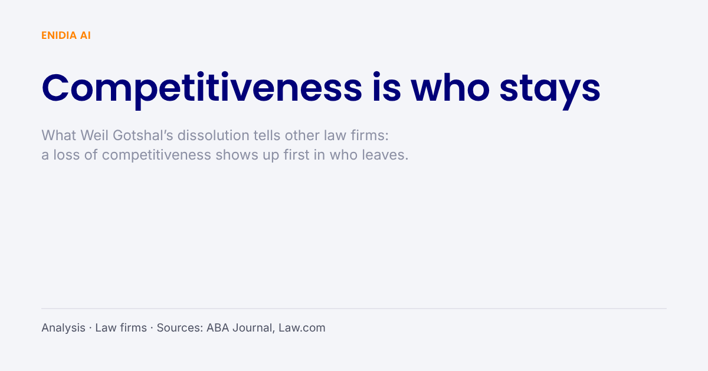

Analysis · Law firms
Competitiveness is who stays: what Weil Gotshal’s dissolution tells other firms

Weil Gotshal’s partners voted to dissolve the firm after a year in which nearly 50 of them left. Our view is that this is what a loss of competitiveness looks like in a law firm. It does not show up first in the accounts. It shows up in who walks out of the door, and in what goes with them.
On 11 November the ABA Journal reported that partners at Weil, Gotshal & Manges had voted to dissolve the firm. According to Law.com, 97 percent of them approved, about two weeks after the management committee recommended it on 28 October. A three-person dissolution committee will oversee the wind-down. Executive chair Barry Wolf will act as a special consultant through the end of the year, and longer if the wind-down runs into 2027. The firm will use restructuring officers from AlixPartners and Davis Polk & Wardwell. Law.com reports that the next phase is paying creditors, chiefly landlords, and collecting outstanding receivables.
The same reporting describes how the firm got here. Law.com counts nearly 50 partner exits in 2026, with sources estimating at least 500 million dollars in lost business. It also reports that restructuring chair Matt Barr and several bankruptcy lawyers are in advanced talks to join Skadden. Neither Barr nor Skadden responded to Law.com’s requests for comment. The ABA Journal says the partner exodus helped bring down what it called a once-venerated Wall Street firm.
That is all the sources say about the cause, and we will not add to it. We do not know what went on inside Weil, and this piece does not claim to.
What competitiveness means for a law firm
The reporting does raise a broader question, and it is the one we want to answer.
A law firm has no factory and very little that it owns. Its competitiveness is the answer to a simple question that every partner asks every year: is this the best place for me and my clients? When a firm stops winning that argument, the first sign is not a bad quarter. The first sign is that people leave. Clients tend to follow the partner rather than the letterhead. Each departure makes the next one easier, and the partners who stay watch the ones who went.
This is our reading of how firms in general lose ground, not a finding about Weil. But it is consistent with the one cause the sources name, and it is why we think “lack of competitiveness” and “partner exits” are not two explanations. They describe the same thing from the outside and from the inside.
Could technology have helped?
On the same day, the ABA Journal’s Legal Rebels podcast published an episode with Noah Waisberg, co-founder and CEO of the contract analysis company Zuva. Before that he was CEO of Kira Systems from its founding until its sale to Litera in 2021, and he worked at Weil as a summer associate in 2005 and an associate from 2006 to 2010. The episode, hosted by the ABA Journal’s Victor Li, asks: “could technology play a role in helping other firms avoid such a fate in the future?”
We think the question deserves a careful answer rather than an enthusiastic one, so here is ours.
No contract tool, AI assistant or platform keeps partners at a firm. Firms do not lose their best people because associates read documents slowly. Software does not fix that, and we would not believe a vendor who said it did.
The narrow place where it does matter
There is one part of competitiveness that technology does touch, and it is the part nobody puts in a brochure.
When partners leave, what goes with them is not only the client relationship. It is the knowledge of how the firm does the work. Which precedent was used on which deal and why. What the client agreed to in an amendment three years ago. Which point on a checklist was disputed last time and how it was settled. In most firms that knowledge lives in people’s memory and in email threads nobody can find. It is the least documented asset a firm owns, and the easiest one to lose.
A firm that keeps that knowledge in its own documents, and can find it again, is harder to hollow out. The next partner can pick up where the last one stopped. That is a resilience argument rather than an efficiency one, and it is the only honest connection we see between this story and what we build.
What we are not claiming
We are not claiming Enidia would have changed anything at Weil Gotshal. We are not claiming that a firm that buys good software is safe. Our tool does one thing. It answers questions from a firm’s own documents, on the firm’s own hardware, and marks each answer Found, Inferred or Absent, with the verbatim source and its location. At the end it produces a certificate that can go into the matter file, to the client, or to a regulator.
The test we hold ourselves to is the one Aleksander Smywiński-Pohl set out in his interview on this blog: checking the AI’s work must be faster than doing the work yourself. If it is not, we have sold a firm a second job, and a firm under pressure is the last place that belongs.
You can read more about the three agents and our Legal AI Verification Standard.
This article is not legal advice. Enidia AI is a software company, not a law firm.
Sources: Victor Li, ABA Journal, “Weil Gotshal partners vote to dissolve firm”, 11 November 2026, reporting Law.com; ABA Journal Legal Rebels podcast, “What happened at Weil Gotshal? Could tech help other firms avoid that fate?”, 11 November 2026. Every figure in this article comes from these reports. None of it is Enidia’s own research.
Try Enidia AI for free with your Google login.
Open app.enidia.ai